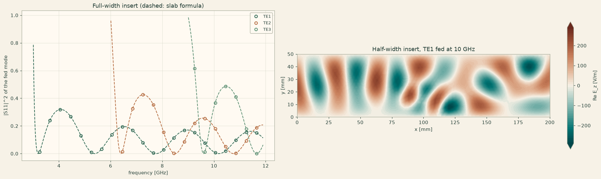
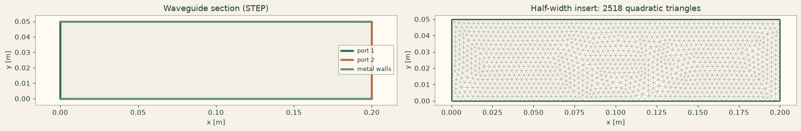

Docs › Examples › Waveguide with several propagating modes
Microwaves, waveguide ports · 2D
Waveguide with several propagating modes
A metal waveguide wide enough for three modes holds a dielectric insert; every mode is fed in turn and its S-parameters are computed.
Run locally with OneSimulation. The example downloads are free. Running them requires an activated runtime. Runtime Alpha 0.2.1a7 · CPython 3.13 on macOS (Apple Silicon), Ubuntu 22.04 (x86-64), and Windows x64. Installation and activation · View pilot plans. Scope of the reference checks.

What it computes
OneSimulation cuts the H-plane section of the guide and two inserts from STEP plates and solves E_z with quadratic triangles; each waveguide port computes four modes of its port line, imposes the exact radiation condition for all of them and feeds one, and scattering_parameters returns S for every port and mode. An insert across the whole width is swept from 3.25 to 11.65 GHz, an insert across half the width converts the modes at 10 GHz. The script that builds the STEP file comes with the notebook.
What it checks
With the full-width insert the reflected power of TE1, TE2 and TE3 follows the closed-form slab reflection to 1.0e-3, 1.7e-3 and 3.6e-3, and less than 2e-7 of the power leaks into other modes; the half-width insert converts up to 35 % of the amplitude into other modes, conserves the power of every fed mode to 1e-10 and is reciprocal to 2.3e-15.
Geometry
The notebook starts at the import of the CAD files multimode_waveguide_scattering.step, multimode_waveguide_scattering_full.step, multimode_waveguide_scattering_half.step: STEP (AP242), readable by any CAD program, with the names of the faces that the boundary conditions use. Put them next to the notebook.

The geometry script
The script multimode_waveguide_scattering_geometry.py builds the geometry with the CAD objects of OneSimulation and writes the files. Change a dimension there, run it, and run the notebook again.
"""Geometry of the OneSimulation example "Waveguide with several propagating modes".
Builds with the CAD objects of OneSimulation, as thin plates, the H-plane section of a metal
waveguide 50 mm wide and 200 mm long (multimode_waveguide_scattering.step; faces x_min and x_max
are the ports, y_min and y_max the metal walls) and two dielectric inserts 40 mm long in its middle:
one filling the whole width (multimode_waveguide_scattering_full.step) and one filling the lower
half only (multimode_waveguide_scattering_half.step).
"""
from onesim.cad.d3 import Box
length, width, insert, thickness = 0.2, 0.05, 0.04, 0.005
start = (length - insert) / 2
Box(length=length, width=width, height=thickness).save(
"multimode_waveguide_scattering.step"
)
Box(origin=(start, 0.0, 0.0), length=insert, width=width, height=thickness).save(
"multimode_waveguide_scattering_full.step"
)
Box(origin=(start, 0.0, 0.0), length=insert, width=width / 2, height=thickness).save(
"multimode_waveguide_scattering_half.step"
)The notebook
The complete notebook, cell by cell. Run it to produce the figures and the comparison printout.
Between two metal walls \(W=50\) mm apart (the H-plane section of a rectangular waveguide), a wave with the electric field \(E_z\) out of the plane travels in the modes
At 10 GHz three modes propagate. A port must then absorb all of them, not only the fundamental one: SectionWaveguidePort computes the modes of its port line and imposes the exact radiation condition for each of them (four here, the fourth evanescent), and feeds the mode incident_mode with 1 W per metre of depth.
A dielectric insert (\(\varepsilon_r=2.25\), length \(d=40\) mm) sits in the middle of the 200 mm long guide.
| boundary | condition | |---|---| | x_min | waveguide port 1, four modes, one of them fed | | x_max | waveguide port 2, four modes, matched | | y_min, y_max | perfect electric conductor |
Reference. An insert that fills the whole width does not couple the modes; each one meets a slab with the wavenumbers \(\beta_m\) outside and \(\beta'_m=\sqrt{\varepsilon_rk^2-(m\pi/W)^2}\) inside, and reflects the power fraction (D. M. Pozar, Microwave Engineering, 4th ed., §2.7 and §3.3)
An insert across half the width converts modes. Its S-matrix has no closed form, but it must be reciprocal (\(S_{1n,1m}=S_{1m,1n}\) for the reflection from mode \(m\) into mode \(n\)) and, being lossless, conserve the power of every incident mode.
import numpy as np
from onesim.cad.exchange import load
from onesim.materials import VACUUM_PERMEABILITY, VACUUM_PERMITTIVITY
from onesim.materials.electromagnetic import (
IsotropicElectromagneticMaterial,
RegionwiseElectromagneticMaterial,
)
from onesim.meshing import TriangularMesher
from onesim.numerics import Numerics
from onesim.numerics.fem import FiniteElement, Lagrange
from onesim.numerics.linear import ComplexSparseDirect
from onesim.physics.electromagnetics import (
FrequencyDomainMaxwell,
PerfectElectricConductor,
SectionWaveguidePort,
scattering_parameters,
)
from onesim.simulation import Problem, Simulation
from onesim.visualization import plots, theme
theme.set()
permittivity = 2.25
light = 1 / np.sqrt(VACUUM_PERMEABILITY * VACUUM_PERMITTIVITY)Geometry and mesh
load reads the guide and the two inserts; section cuts them at half thickness. Each insert gets its own mesh that follows its outline, with quadratic triangles of 3 mm (between five and six per wavelength in the dielectric at 12 GHz).
section = lambda name: load(f"multimode_waveguide_scattering{name}.step").section(
(0, 0, 1), origin=(0, 0, 0.0025)
)
guide = section("")
inserts = {
"full width": section("_full").named("insert"),
"half width": section("_half").named("insert"),
}
sides = guide.boundaries
width = guide.size[1]
meshes = {
name: TriangularMesher(target_size=3e-3, embedded_regions=(insert,)).generate(guide)
for name, insert in inserts.items()
}
fig = plots.figure(1, 2, size=(16, 4.5))
plots.geometry(
guide,
selection={
"port 1": sides.x_min,
"port 2": sides.x_max,
"metal walls": sides.y_min | sides.y_max,
},
labels=False,
title="Waveguide section (STEP)",
ax=fig[0],
)
plots.mesh(
meshes["half width"],
groups=("all",),
legend=False,
title=f"Half-width insert: {meshes['half width'].cell_count} quadratic triangles",
ax=fig[1],
)
plots.show()Model
One FrequencyDomainMaxwell model per frequency solves \(E_z\). scattering_parameters returns \(S\) for every port and mode, (port, mode) counted from zero, normalized to the power each mode carries. The full-width insert is swept from 3.25 to 11.65 GHz in steps of 0.4 GHz with each propagating mode fed in turn.
material = RegionwiseElectromagneticMaterial(
{"insert": IsotropicElectromagneticMaterial(relative_permittivity=permittivity)},
default=IsotropicElectromagneticMaterial(),
)
numerics = Numerics(
spatial=FiniteElement(element=Lagrange(order=2)),
linear_solver=ComplexSparseDirect(),
)
model = lambda frequency: FrequencyDomainMaxwell(
domain=guide.domain(),
frequency=frequency,
material=material,
polarization="Ez",
phasor_convention="exp(-i*omega*t)",
amplitude_convention="peak",
)
simulate = lambda model, insert, mode: Simulation(
problem=Problem(
name="Multimode waveguide",
geometry=guide,
physics=(model,),
boundary_conditions=(
SectionWaveguidePort(
physics=model,
boundary=sides.x_min,
modes=4,
incident_mode=mode,
incident_power=1.0,
),
SectionWaveguidePort(physics=model, boundary=sides.x_max, modes=4),
PerfectElectricConductor(physics=model, boundary=sides.y_min | sides.y_max),
),
),
mesh=meshes[insert],
numerics=numerics,
).solve_stationary()
scattering = lambda frequency, insert, mode: scattering_parameters(
simulate(m := model(frequency), insert, mode), m
)
frequencies = np.arange(3.25e9, 11.9e9, 0.4e9)
cutoff = lambda mode: (mode + 1) * light / (2 * width)
sweep = {
mode: {
f: scattering(f, "full width", mode)
for f in frequencies
if f > 1.01 * cutoff(mode)
}
for mode in range(3)
}Results
Full-width insert: the reflected and transmitted power of each mode against the slab formula, and the largest power found in any other mode (it must vanish without coupling).
def slab(mode, frequency):
k = 2 * np.pi * frequency / light
outside, inside = np.sqrt(k**2 - ((mode + 1) * np.pi / width) ** 2), np.sqrt(
permittivity * k**2 - ((mode + 1) * np.pi / width) ** 2
)
rho, phase = (outside - inside) / (outside + inside), np.sin(
inside * inserts["full width"].size[0]
) ** 2
return 4 * rho**2 * phase / ((1 - rho**2) ** 2 + 4 * rho**2 * phase)
reflected = {
mode: np.array([abs(s[(0, mode)]) ** 2 for s in runs.values()])
for mode, runs in sweep.items()
}
transmitted = {
mode: np.array([abs(s[(1, mode)]) ** 2 for s in runs.values()])
for mode, runs in sweep.items()
}
exact = {mode: slab(mode, np.array(list(runs))) for mode, runs in sweep.items()}
print(
"fed mode frequencies max ||S11|^2 - slab| max ||S21|^2 - (1 - slab)| largest power in another mode"
)
for mode, runs in sweep.items():
leak = max(
abs(value) ** 2
for s in runs.values()
for (port, other), value in s.items()
if other != mode
)
print(
f"TE{mode + 1:d} {len(runs):11d} {np.abs(reflected[mode] - exact[mode]).max():20.2e} "
f"{np.abs(transmitted[mode] - (1 - exact[mode])).max():26.2e} {leak:29.1e}"
)Half-width insert at 10 GHz: the S-matrix of the three propagating modes for each fed mode, its reciprocity and the power balance.
half = {mode: scattering(10e9, "half width", mode) for mode in range(3)}
print(
"\nhalf-width insert, 10 GHz: |S| from the fed mode (rows) into port 1 / port 2 modes (columns)"
)
print("fed port 1: TE1 TE2 TE3 port 2: TE1 TE2 TE3 total power")
for mode, s in half.items():
print(
f"TE{mode + 1} "
+ " ".join(f"{abs(s[(0, n)]):.3f}" for n in range(3))
+ " "
+ " ".join(f"{abs(s[(1, n)]):.3f}" for n in range(3))
+ f" {sum(abs(v) ** 2 for v in s.values()):.10f}"
)
print(
f"reciprocity: largest |S(1 n <- 1 m) - S(1 m <- 1 n)| = {max(abs(half[m][(0, n)] - half[n][(0, m)]) for m in range(3) for n in range(3)):.1e}"
)Figure
Left: reflected power of each mode at the full-width insert against the slab formula (dashed): every mode has its own Fabry-Perot fringes, starting at its cutoff. Right: the field of the half-width insert fed with the fundamental mode, which leaves the insert as a mixture of modes.
field = simulate(m := model(10e9), "half width", 0).field(m.electric_field)
fine = np.linspace(3.0e9, 11.9e9, 900)
x, y = np.asarray(meshes["half width"].coordinates).T
fig = plots.figure(1, 2, size=(17, 5))
plots.line(
points={
f"TE{mode + 1}": (np.array(list(runs)) / 1e9, reflected[mode])
for mode, runs in sweep.items()
},
reference={
f"TE{mode + 1}": (
fine[fine > 1.001 * cutoff(mode)] / 1e9,
slab(mode, fine[fine > 1.001 * cutoff(mode)]),
)
for mode in range(3)
},
xlabel="frequency [GHz]",
ylabel="|S11|^2 of the fed mode",
title="Full-width insert (dashed: slab formula)",
legend="upper right",
ax=fig[0],
)
plots.heatmap(
1e3 * x,
1e3 * y,
field.evaluate(np.column_stack((x, y)))[:, 2].real,
triangles=np.asarray(meshes["half width"].cells),
colormap="diverging",
centre=0.0,
label="Re E_z [V/m]",
xlabel="x [mm]",
ylabel="y [mm]",
title="Half-width insert, TE1 fed at 10 GHz",
ax=fig[1],
)
plots.show()Going further
Feed port 2 instead of port 1 and check \(S_{21}=S_{12}\) mode by mode, or replace the insert by a metal post (a hole in the section with a PerfectElectricConductor) to see the strong mode conversion of an inductive obstacle.